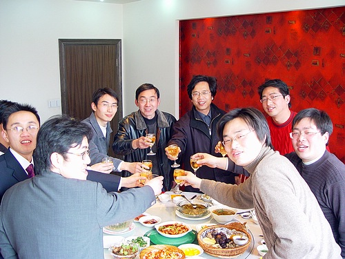
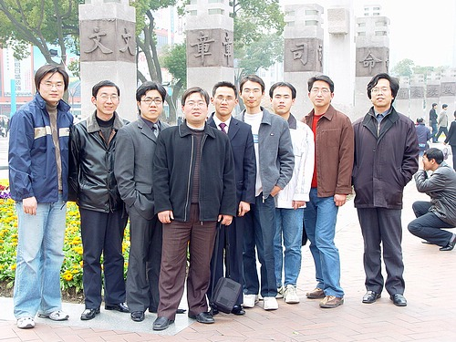
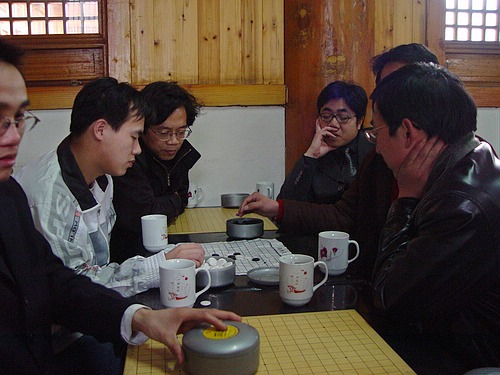
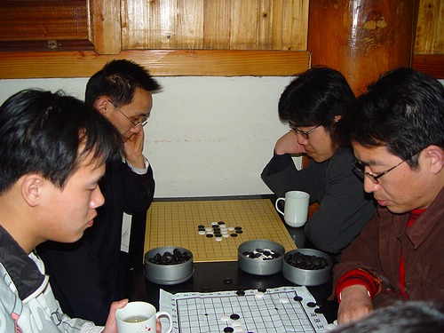

南通五子棋社活动报道〔第三次〕参加江苏连珠聚会
首页
江苏五子棋
#1 南通五子棋社活动报道〔第三次〕参加江苏连珠聚会 作者：有志青年 发表时间：2006-3-17 12:50:12
由江苏连珠组织的五子棋聚会活动放在江阴，此次活动共有来自南通、无锡、常熟、江阴等地共计十人参加，其中有职业四段一人。
中午聚餐之后，于江阴棋苑交流棋局，活动到5点结束。
此次南通出征共计6人〔司机一人、后勤一人（天堂的银元）、倒茶一人（有志青年）、棋局交流三人〕
参与棋局交流的三位选手充分展示了南通五子棋的风采，在职业四段两年没有下棋的情况下，南通一选手与之互有胜负。
预计下一次活动安排在南通举行！





#2 Re:明日出征江阴 作者：yingzi 发表时间：2006-3-17 13:12:46
祝成功！！！
#3 Re:明日出征江阴 作者：小丸.net 发表时间：2006-3-17 15:41:49
怎么好像有杀气～～～～～
#4 Re:明日出征江阴 作者：有志青年 发表时间：2006-3-18 8:41:04
马上就出发咯！
#5 Re:明日出征江阴 作者：幽若 发表时间：2006-3-18 13:46:12
55555555555555555,俺家领导不批,俺也想去的嘛.
#6 Re:明日出征江阴 作者：春风 发表时间：2006-3-18 13:51:08

#7 Re:参加江苏连珠第一次聚会活动报道 作者：天堂的银元 发表时间：2006-3-19 10:36:21
对高手们只有
景仰啊！
#8 Re:参加江苏连珠第一次聚会活动报道 作者：春风 发表时间：2006-3-20 12:29:29
若有连珠社的特约记者更一步的介绍一下盛况就过瘾了!
#9 Re:参加江苏连珠第一次聚会活动报道 作者：幽若 发表时间：2006-3-20 12:33:09
期待高手来南通,有志照片中和风趣幽默对弈的是职业的吗?结局如何呢?
#10 Re:参加江苏连珠第一次聚会活动报道 作者：疏虞 发表时间：2006-3-20 13:56:28
风趣幽默 强
#11 Re:参加江苏连珠第一次聚会活动报道 作者：eppita 发表时间：2006-3-27 17:31:58
祝愿：江苏连珠越办越红火
#12 Re:参加江苏连珠第一次聚会活动报道 作者：大侠 发表时间：2006-3-27 17:50:40
有钱的捧个钱场，没钱的捧个人场...江阴欢迎你们！！
#13 Re:南通五子棋社活动报道〔第三次〕参加江苏连珠聚会 作者：455 发表时间：2006-6-19 23:48:19
支持
#14 Re:南通五子棋社活动报道〔第三次〕参加江苏连珠聚会 作者：孤竹 发表时间：2006-6-21 0:25:06
活动搞得不错嘛,继续关注
#15 Re:南通五子棋社活动报道〔第三次〕参加江苏连珠聚会 作者：黄药师 发表时间：2007-7-20 17:57:12
看到了大侠和康师傅啊！哈哈
#16 Re:南通五子棋社活动报道〔第三次〕参加江苏连珠聚会 作者：nara 发表时间：2008-9-11 16:39:54
5张是图片吗?好象看不见了啊.有志大哥!［ 有志青年 于 2008-9-11 16:51:38 时奖励此帖[金币加 20 威望加1］
#17 Re:南通五子棋社活动报道〔第三次〕参加江苏连珠聚会 作者：蝶影随风 发表时间：2008-9-25 14:59:01
什么时候来南通啊期待.怎么没有一个女将的啊.哎,,,,
#18 Re:南通五子棋社活动报道〔第三次〕参加江苏连珠聚会 作者：mszxp 发表时间：2008-10-29 1:05:07
什么时候来南京活动啊